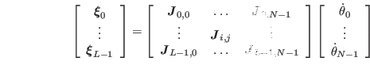
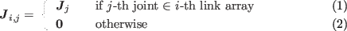
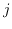

Next: ベースリンク仮想ジョイントを用いた全身逆運動学法 Up: ロボットの動作生成 Previous: 非ブロック対角ヤコビアンによる全身協調動作生成 Contents Index
運動学関係式はEquation ![[*]](crossref.png) のようになる.
のようになる.
小行列 は以下のように求まる.

ここで，
はEquation のもの．
Equation を単一のマニピュレータの
逆運動学解法と同様にSR-Inverseを用いて関節角速度を
求めることができる.
ここでの非ブロック対角ヤコビアンの計算法は, アーム・多指ハンドの動作生成 14に おいて登場する運動学関係式から求まるヤコビアンを 導出することが可能である.